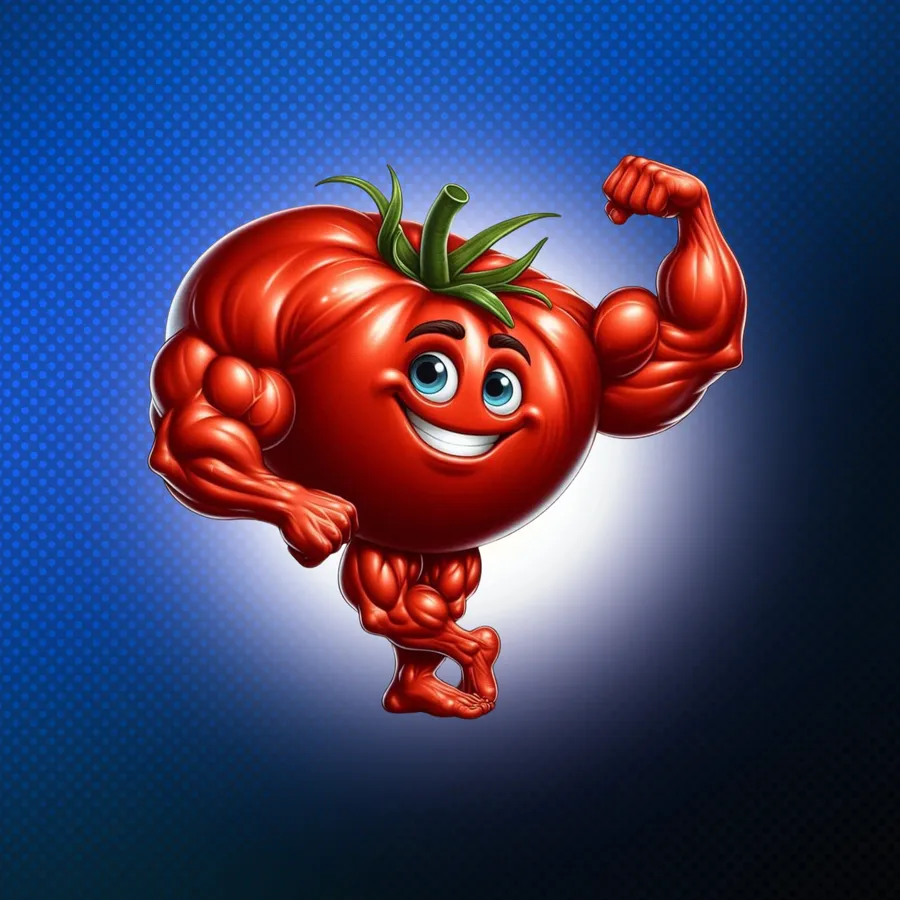

מתקדמים ביחד! 🚀
בנינו את התוכנית בשבילך, ואתה הכי יודע מה עובד לך ומה פחות. כמה דקות ממך = תוכנית טובה יותר לכולם 🍅
- ⏱️ בערך 3 דקות
- 👆 כמעט הכל בלחיצה
- 💾 נשמר אוטומטית
אין תשובה לא נכונה. אחיה קורא כל תשובה, אז נשמח שבאמת תגיד הכל.

תודה, אח! 💪
אחיה קורא כל תשובה, ותראה את השינויים כבר בתקופה הקרובה.
שלחת עכשיו משהו שישפר את התוכנית לכל הקהילה. זה לא מובן מאליו 🙏
שליטה פיזית. שליטה מנטלית.
מצב תצוגה: התשובות לא נשלחו לגיליון (הגשר עוד לא חובר).
אופס, השליחה לא עברה 😅
כנראה בעיית אינטרנט רגעית. התשובות שלך שמורות, לא נמחק כלום. אפשר לנסות שוב עכשיו.